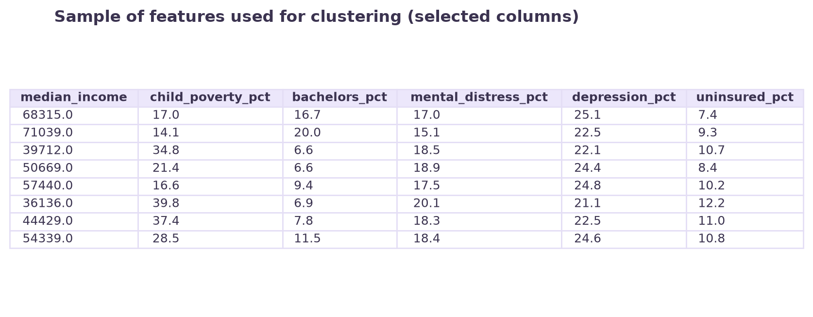
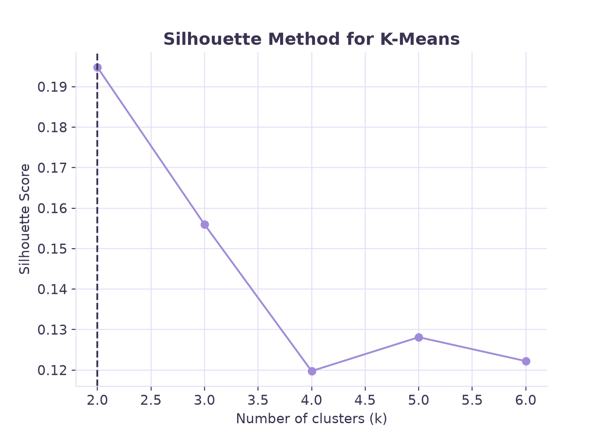
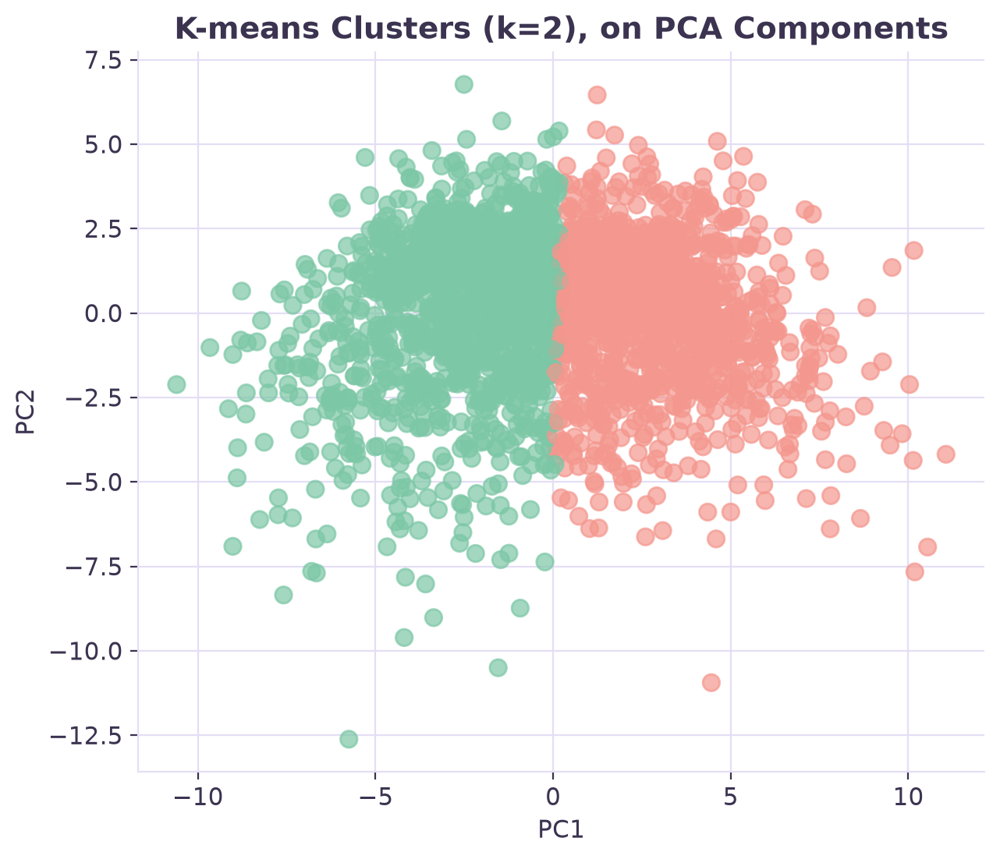
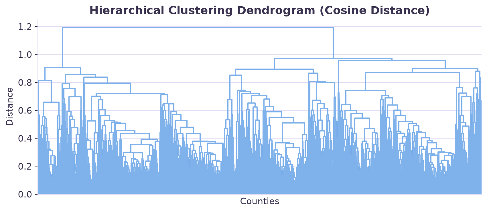
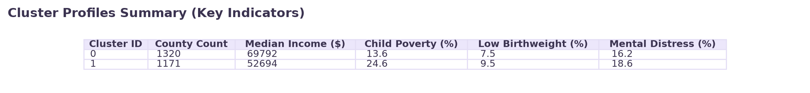

Overview
Clustering is a type of unsupervised learning, used to discover hidden patterns and groupings within unlabeled data. This is done based on how similar features are. Partitioning is a specific type of clustering that divides the dataset into distinct, non-overlapping groups. It works by iteratively assigning each county to the nearest centroid. With partitioning clustering, Euclidean distance is used. Euclidean distance measures the straight-line distance between the data points. In contrast hierarchical clustering builds a bottom-up tree, called a dendrogram. This shows nested relationships and uses cosine distance which measures the angle/directional similarity between profiles rather than magnitude.
Utilizing clustering to make discoveries in these specific datasets involved 35 structural socioeconomic and healthcare access variables while deliberately excluding the low-birth-weight outcomes. This was done because if that outcome is included, the algorithm is essentially being given the “answer.” The algorithm would group counties together simply because they have similar low birth weight rates, which defeats the purpose of the analysis. The goal of using clustering on this data is to naturally discover distinct “community profiles” or typologies of U.S. counties based on the structural conditions.


Data
Prepared dataset: clean_unlabeled_numeric.csv. Raw data: raw_data folder.
Clustering algorithms rely on calculating variances and geometric distances to determine how similar data points are to one another. Distance cannot be calculated on categorical text or missing values, meaning the dataset must constrict of only continuous, unlabeled numeric variables. Before clustering, standardization of all 35 features is necessary for that variables with large magnitudes would not mathematically overpower percentage-based variables.


images/cluster_data_sample.png. You can reuse images/clean_sample.png from DataPrep_EDA, or make a new small image of just the scaled/numeric columns actually fed into clustering.Code
Code: clustering_analysis.py. Language: Python. Core packages: pandas, numpy, scikit-learn (KMeans, silhouette_score, PCA for visualization), scipy (hierarchical clustering with cosine distance).
This analysis used scikit-learn and scipy. A critical step was to use StandardScaler to normalize the dataset. This is necessary because K-means uses Euclidean distance and normalizing ensures variables with naturally large variables do not overwhelm the percentage-based variables. For K-means the algorithm was tested on k=2 through 6, using the silhouette_score metric to identify the optimal number of distinct groups. For the hierarchical approach, the code used Cosine similarity. This build the dendrogram based on the directional profile of community variables. Finally, cross-tabulation was used to compare cluster assignments directly, verifying if they grouped counties similarly even when using different distances.
Results
To determine the optimal number of groups for K-means, the testing of multiple variables from k=2 through 6 was done. They were then evaluated using the Silhouette method. The silhouette score shows us how tightly grouped the clusters are. The scores peaked at k=2 and dropped steadily for k=3 and k=4. The silhouette method identified k=2 as the best fit. The hierarchical clustering dendrogram confirmed this structure. The highest vertical stems in the tree divide the counties into two branches, suggesting k=2. The two cluster assignments of K-means and Hierarchical aligned well. The crosstab revealed that the clusters overlapped very well. The two profiles of K-means clusters represent different environments. Cluster 0 is relatively advantages while Cluster 1 represents more distressed communities


images/cluster_silhouette.png (already generated by clustering_analysis.py).

images/cluster_kmeans_scatter.png (already generated by clustering_analysis.py). This is the required non-dendrogram clustering image.

images/cluster_dendrogram.png (already generated by clustering_analysis.py). This is the required dendrogram.

images/cluster_summary_table.png (already generated by clustering_analysis.py).Conclusions
The most interesting takeaway is how structural distress predicts infant health outcomes. The clustering techniques were blind to bight weight during the training and still created clusters that perfectly stratified the infant health crisis. The advantaged cluster averaged a low birth weight of 7.5% while the distressed cluster averaged a low birth weight of 9.5%. This confirms that community vulnerabilities naturally group together geographically.